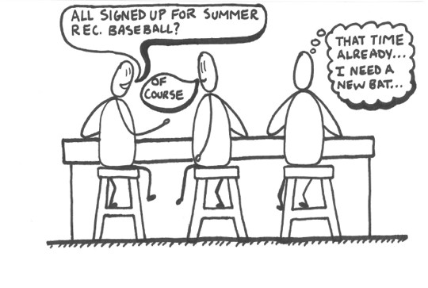

The Challenge
Dick's Sporting Goods is a leading retailer in sporting equipment in the US. They are the go-to spot for shoppers looking to start a new sport as they pride themselves in staffing athletes to help with equipment testing and purchase. Generally, they have focused their strategy in suburban areas, but they challenged us to reimagine urban sport commerce and create a sustainable concept catered to the right targets.
Research, Design, Build
Kicking off this challenge, we interviewed sports shoppers both urban and suburban. Our team being located in Evanston allowed us to do shopalongs and other in-context interviews. We spoke to young professionals, families, students, employees, etc. Our findings led to several insights on which we were able to build several personas around behaviors and perceptions.While these personas were distinct with different goals and habits, they all places a high value on selection and variety when purchasing equipment.
Being all former athletes, our team tried to avoid anchoring our research on our own personal experiences. However, our sports knowledge came in handy in building a framework mapping "equipment intensity" of sports. For example, lacrosse and baseball players have different needs but are more equipment intense and more likely to shop at Dick's Sporting Goods. Runners on the other hand, were much less equipment intense and significantly less likely to shop at Dick's Sporting Goods. This brought to light interesting insights about our personas and Dick's Sporting Goods.

Greater equipment intensity meant higher chance of the athlete (or parent of the athlete) heading to a large sporting good retailer like Dick's Sporting Goods.
Additionally, we found that urban sports shoppers value convenience over instant gratification in terms of selection, trial, purchase, and delivery of sporting goods. How might we provide our urban customers with convenience of selection, trial, purchase, and delivery given the contrains of an urban environment?
DSG Urban Exhibition
After a few solo storms and shareouts, we came together around our prototype solution - DSG Urban Exhibition. The concept is a small, urban space for equipment testing, trial, and order. We wanted to capture the excitement young urbanites feel signing up for new sports activities, such as an intramural soccer league or company sponsored softball game.
DSG Urban Exhibition is a sample only, testing centric store with a small footprint, coupled with an online platform for selection of variants and purchasing of products which are then delivered to the customer's home.
For young professionals and families living in urban areas, DSG Urban Exhibition is a retail experience that provides unmatched convenience in testing, purchasing and delivery of sporting goods, offering the satisfaction of physically finding the correct item combined with the convenience of online shopping.
Takeaways
Being early on in my Kellogg experience, this was my first real foray into design thinking. While my team and I definitely made plenty of mistakes along the way, we learned the importance of in-context research. Shopalongs reveal so much about a consumers behavior. In-context interviews provide the opportunity to find behaviors consumers wouldn't know they do - they are "caught in the act". This leads to moments when an experience can build excitement or ameliorate anxiety. In finding these otherwise unkown moments, products can deliver an exceptional, unique experience to users.